Strut Housing: Service and Repair
Front Wheelhouse/Damper HousingMass Production Body Welding Diagram
Mass Production Body Welding Diagram:
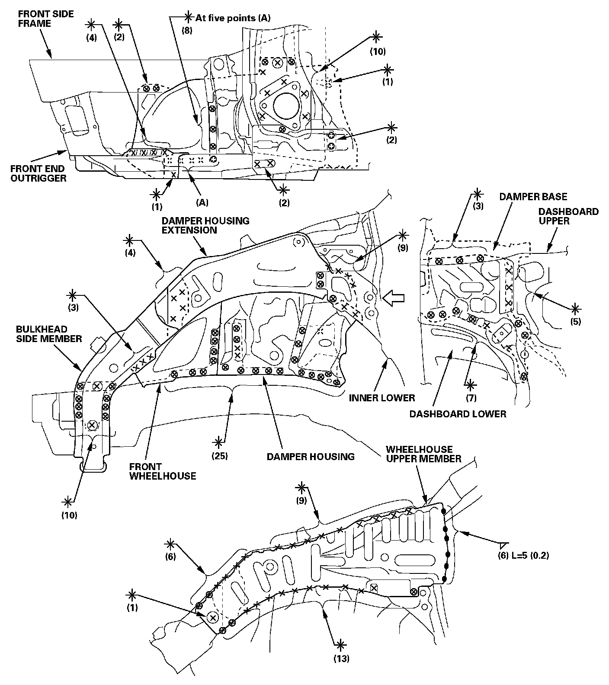
Removal
Remove the wheelhouse upper member, and replace the bulkhead side member and front wheelhouse.
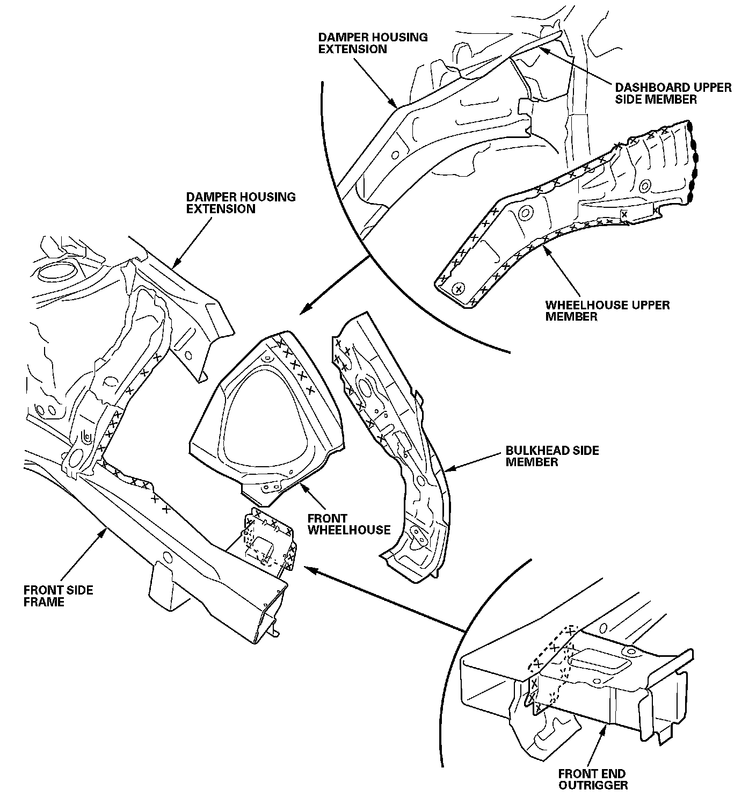
- Check the damper housing position for damage.
- If necessary, replace the damper housing and damper housing extension as an assembly.
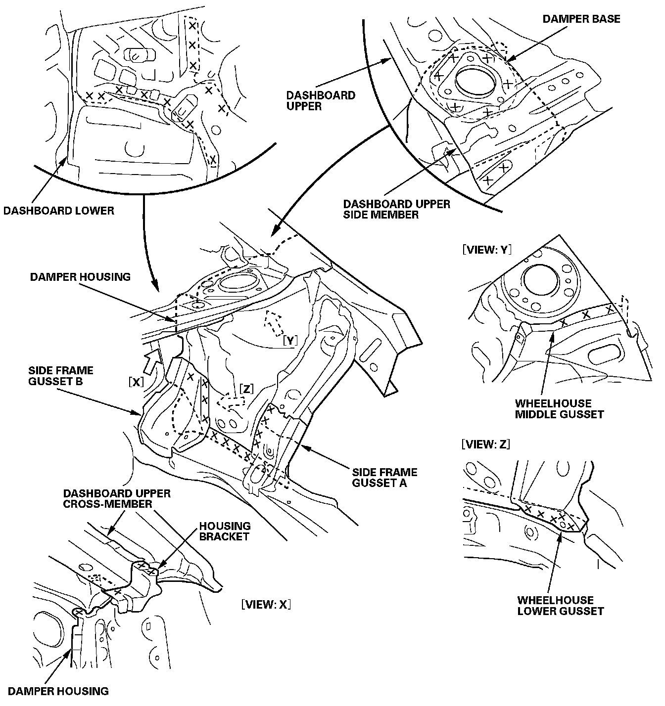
Peel back the inner lower pillar; drill three welded points at the joints for the wheelhouse upper gusset, damper housing extension, and dashboard lower.
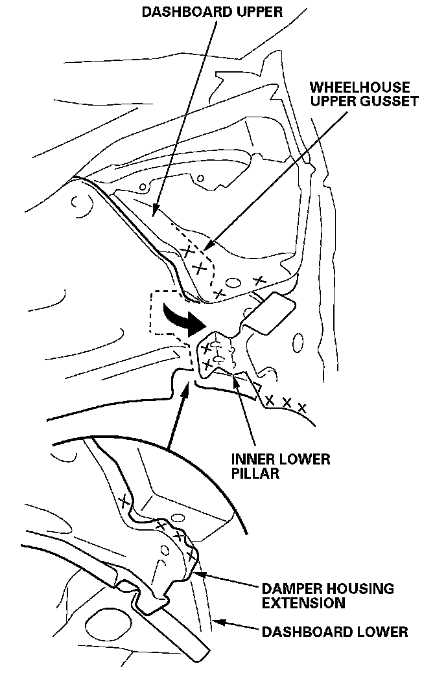
Installation
1. Clamp the new damper housing (A), front wheelhouse (B), bulkhead side member (C), front end outrigger (D), and front bulkhead (E). Measure the front compartment diagonally.
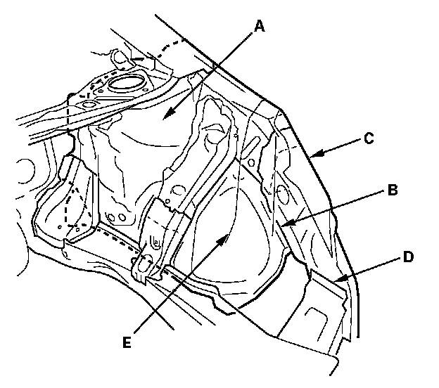
2. Check the body dimensions.
- Engine compartment
- Engine side mount position
- Bulkhead side member position
- Engine compartment and front floor under view
- Repair chart, top view
- Repair chart, side view
3. Tack weld the new parts and front bulkhead into position.
4. Temporarily install the front subframe, and check the front side frame position.
5. Temporarily install the hood, front fender, headlight, and front bumper, then check for differences in level and clearance. Make sure the body lines flow smoothly.
6. Do the main welding. Weld the damper housing (A) and wheelhouse lower gusset (B) to the front side frame (C).
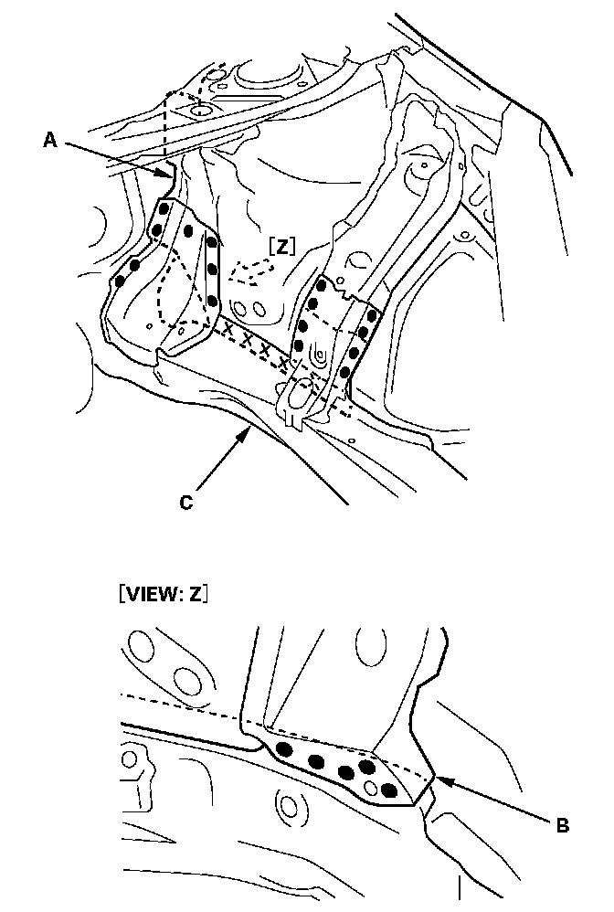
7. Weld the damper base (A), damper housing extension (B), housing bracket (C), wheelhouse upper gusset (D), and wheelhouse middle gusset (E) to the dashboard upper (F).
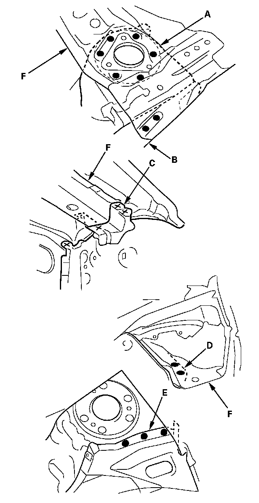
8. Weld the damper housing extension (A) and dashboard lower (B).
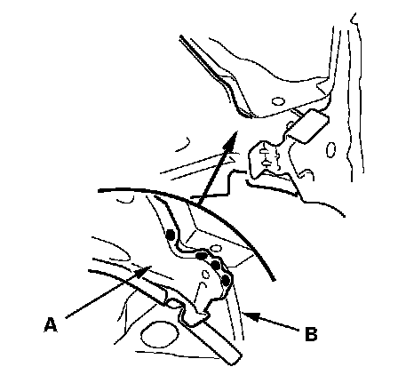
9. From the passenger's side, plug weld the holes in the dashboard lower (A) to the damper housing (B) and wheelhouse lower gusset (C).
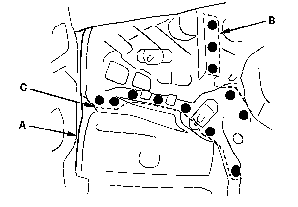
10. Weld the front inner lower pillar (A).
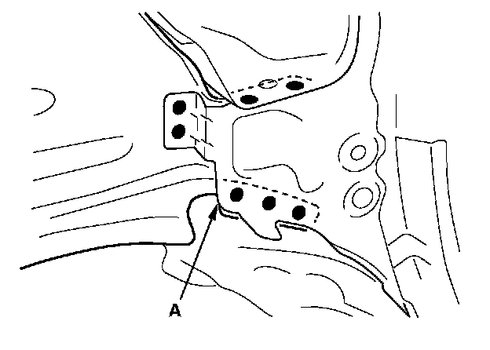
11. Weld the front wheelhouse (A) and bulkhead side member (B).
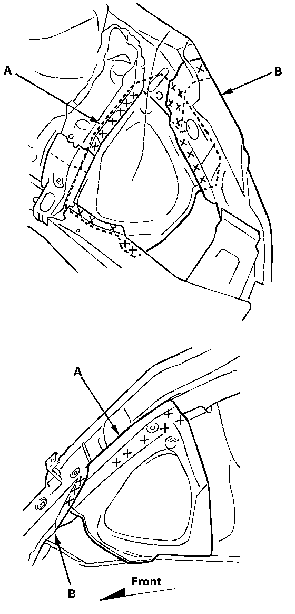
12. Weld the front end outrigger (A).
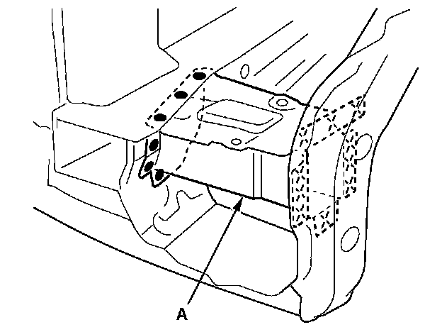
13. Weld the wheelhouse upper member (A).
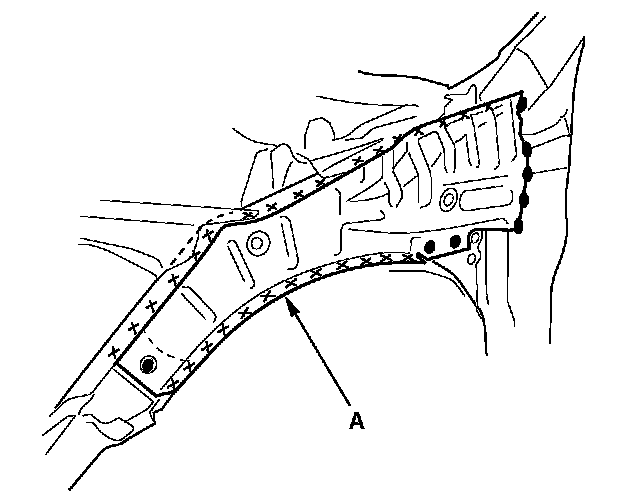